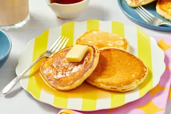

Pancake Recipe

Ingredients List
- 1 and 1/2 cups all purpose flour
- 3 and 1/2 teaspoons baking powder
- 1 tablespoon white sugar
- 1/4 teaspoon salt, or more to taste
- 1 and 1/4 cups of milk
- 3 tablespoons if melted butter
- 1 large egg
Directions
- Gather all the ingredients
- Sift the flour, baking powder, sugar and salt together in a large mixing bowl. Make a well in the center and add the milk, butter and egg: mix until smooth
- Heat a lightly oiled pan or griddle over medium -high heat. Pour or scoop the batter on to the pan/griddle, using about 1/4 cup of batter for each pancake: cook until bubbles form on the surface (this should take about 2-3 minutes)
- Flip the pancake and cook till the pancake is browned on the other side
- Enjoy
Back to recipes page